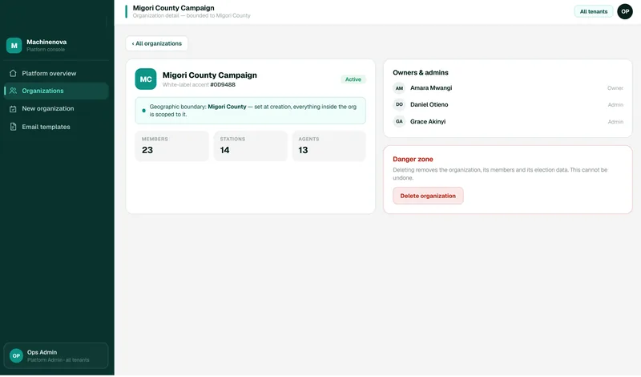

Political organizations operate under intense scrutiny. MachineNova is built with the access controls, encryption, audit trails, and permission structures that election-grade operations demand.
Every component of the MachineNova platform is designed with security as a foundational requirement — not an afterthought. From the moment a mobilizer scans a voter ID to the moment a result is submitted by an agent, every action is controlled, logged, and auditable.
Distinct roles (Owner, Executive, Admin, Chief Agent, Manager and Agent), each with access calibrated precisely to their operational responsibility. No user can access data or functions outside their assigned scope.
Managers can be restricted to a specific region, constituency, or ward. This ensures that field personnel only see and interact with data relevant to their assigned geographic area, preventing unauthorized cross-regional access.
All data transmitted between field devices and the central platform is encrypted in transit. Voter identity data, mobilization records, and result submissions are protected from interception at every point in the data flow.
Every action taken within the platform — every scan, every submission, every login, every result entry — is logged with a timestamp and user attribution. These logs are immutable and available for post-election verification and dispute resolution.
In the Results Portal, managers serve as a verification layer between agents and the central aggregation system. Agent submissions must be reviewed and confirmed by a manager before they are incorporated into the live tally, ensuring data quality and preventing unauthorized result manipulation.
Only administrators can add or remove people, and every new member activates their account through a secure, single-use invitation link that expires. This controlled onboarding process ensures that only authorized personnel have access to the platform at any point during the electoral cycle.
Data synchronizes to the central platform in real time, eliminating the risk of data loss from device failure or connectivity interruption. Field captures are preserved and transmitted as soon as connectivity is restored.
The platform is hosted on secure cloud infrastructure with redundancy, backup systems, and monitoring. Uptime and data integrity are maintained throughout the electoral cycle, including during peak election-day load.
Access control isn't a settings page you forget about. It shapes what every person sees and does in the workspace.



The official register of polling stations and parties is picked during setup and cannot be edited by any user.
Repeated failed sign-ins temporarily lock an account. Passwords are case-sensitive and reset by email link only.
A platform administrator can set an organization inactive, which stops all check-ins immediately until it is reactivated.